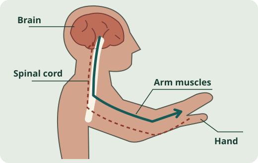
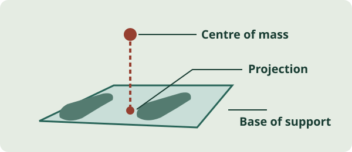
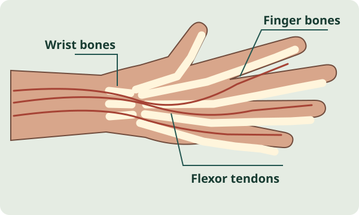

Completion time
Seconds from Start to Finish, with pauses excluded.
Explore practical typing adaptations for people with one-sided motor difficulties, and discover how rehabilitation engineering can make everyday tasks more accessible.

Typing can involve positioning the arm, coordinating several joints, and targeting one key among many. Repeating that movement can change how the task feels.
Explore movement and cerebral palsy


Setup A: the keyboard sits farther from the front edge in this example.
A closer keyboard may change reach. Comfort and suitability depend on the person and setup.
Seconds from Start to Finish, with pauses excluded.
Character edits needed to match the sample.
An optional rating from the visitor.

Understand CP Assistive technology
Assistive technology Spoon use
Spoon use
Balance and mobility
3D Anatomy StudioEngineering LabWhy I built Erry
Living with cerebral palsy has meant finding my own ways to approach everyday tasks—and often explaining those experiences to others. I built Erry Mobility to explore affordable adaptations for challenges like typing with one-sided motor difficulties and to share what I learn.
Read my storyThe Engineering Lab explains how a trial is measured and what further evaluation would require. Personal experience shaped the design brief. Evaluation with intended users is still needed.